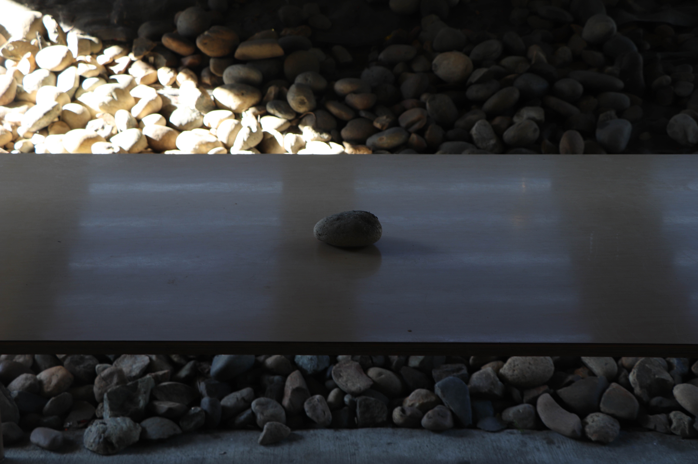

My Projects
Fitted
The work draws inspiration from the sensation of watching oneself from a distance, capturing the eerie calm and reflective silence that often accompany moments of solitude.
Isolation
This project explores the fragility of time and the emotional landscape of isolation. Through fragmented visuals and deliberate pacing, each piece invites the viewer into a moment suspended between presence and absence

Stillness
This photograph captures a solitary stone placed on a smooth surface, framed by the textured contrast of natural rocks behind and beneath

Mirage
Captured in extreme close-up, this photograph draws the viewer into the intricate folds and textures of a single flower.